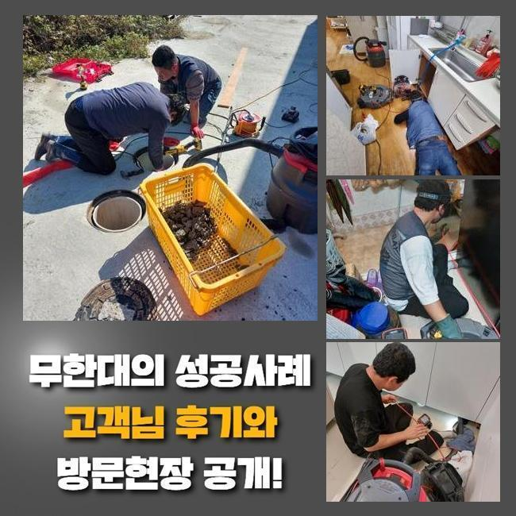
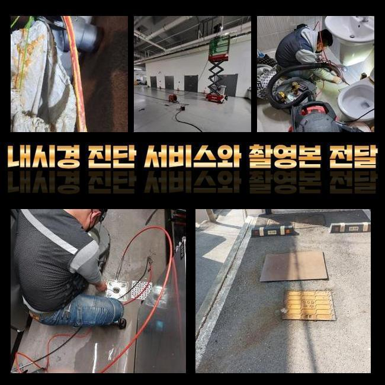
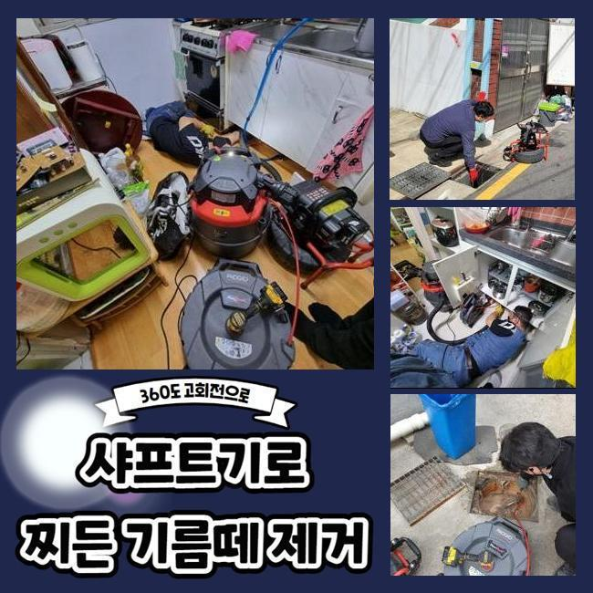
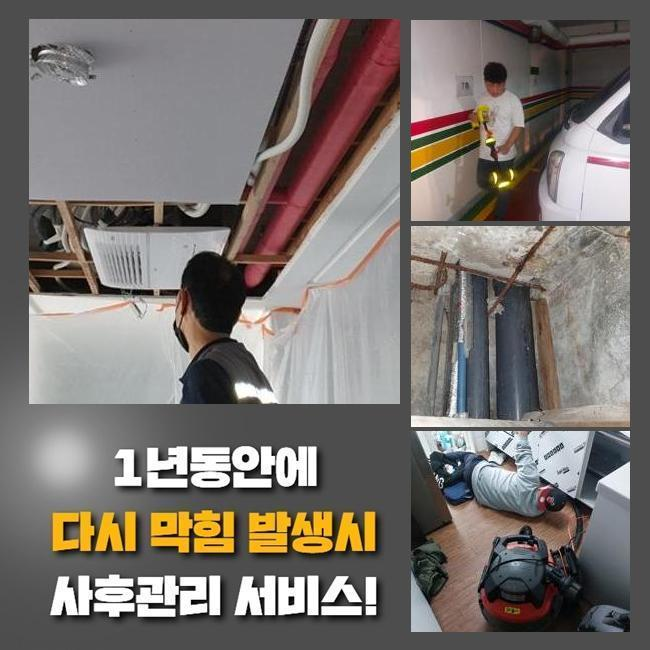
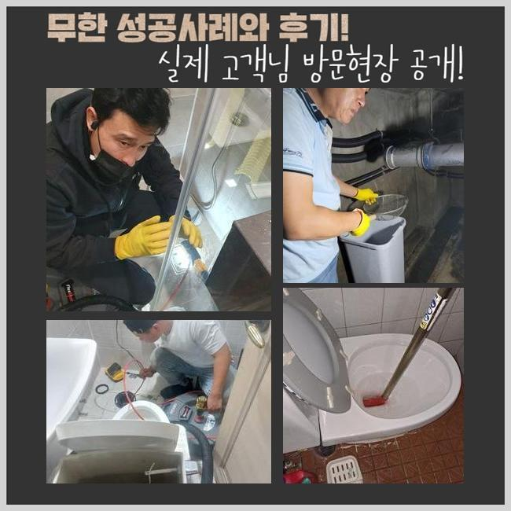

🏠 은평구 갈현동씽크대뚫음 진관동 하수구뚫어주는곳 해결방법
용인 싱크대막힘 전문 시공 후기

📋 작업 개요
- 위치: 용인
- 서비스 유형: 싱크대막힘, 하수구막힘, 배관막힘, 누수수리, 뚫는업체, 배관청소
- 작업 일시: 2025. 4. 1. 17:56
- 업체명: 하수구수사대 (010-5615-2118)
🔍 문제 상황
은평구 갈현동씽크대뚫음 진관동 하수구뚫어주는곳 해결방법
2주전에 하수관로가 막혀 스트레스를 받고 계셨던 고객께 전화가 들어왔었는데요
의뢰인분은 관로와 관련한 전문성을 띄고 계시진않았지만 일정 수준의 지식내용은 알고 계셨었죠
고객분은 입구쪽을 청소시키고 정확한 지점을 찾아보려 노력했지만 어디부분이 시발점인것인지 인지하지 못해 저희업체에게 해결을 바라셨던 것이였죠
자택에 방문드리니 수회에 걸친 셀프대처로 지치셨던것이 보였어요
고객분의 입장에선 명확한 이유에 대해 짚어내기 힘든 경우들이 상당수에요
해당 장소에서 하수도를 살피니 안쪽에는 요소는 보이질 않았어요
고객분은 외부하수관에서 원인들이 자리했을 여지가 있을지모르겠다고 생각했죠
바깥쪽에 식물과 나무가 자리하고 있다면 뿌리등이 배수관으로 침투된다거나 잔해물이 흘러들어갈 여지가있습니다
많은 이유로 바깥의 하수구가 막히는상황에 노출됩니다

🔎 원인 분석
💡 전문가 진단: 정밀 진단 장비를 사용하여 슬러지의 고착 여부를 판명하고 타격/세척 작업을 실시했습니다.
고객분에게 지금 의심하는 원인들에 일러드리고 밖의 배관상태들을 진단해줄것을 안내드렸어요
의뢰인분도 해당 사항을 들으시고 중앙관로의 검수에 동의했습니다
수리를 돌입하고자 기계검수도 진행시켰습니다
통수오류의 무엇이다! 라고 할 수가 없죠
배수구가 드러나있다면 이런저런 이물질 등 근처로부터 유입된 잔해물이 하수관으로 축적됩니다
외측에 비가 온다거나 할 때 바깥쪽 하수시스템들의 상태들을 체크해주지않으면 증상은 점점 커질거에요
또한, 나무의 하수관으로 들어가버리는 사례들도 왕왕 있습니다
배수관을 찌르거나 더불어 표면손실 이슈도 야기시켜요
해당 문제에서는 통수가 원활치못해 막히게되는 상황들이 생기게 될 수 있어요
또한 노후이슈가 있다거나 손상된 상태에서도 통수가 이뤄질 수가 없어서 막힐 수 있어요

🔧 작업 과정
시간들이 흐르며 하수도가 약해지면 여러 폐기물들이 침전되는 기반이 만들어집니다
마지막으로서 대다수 배수장애의 까닭들은 주기적인 청소들을 안하기 때문이에요
때때로 확인하지않을 시, 작은 이물이 축적되고 막혀버리게 되는 상황들이 심해질거에요
결과적으로는 외측을 때때로 체크해보고 청소해주는게 예방으로서의 괄목할만한 방법들이라 할 수 있겠습니다
이런저런 기조를 이해한 후 선제조치를 통해 문제들을 피하는게 우선입니다
내시경장비로 바깥쪽 하수시스템들의 상황들을 체크해보았어요
내시경장비로 살피니 하수도의 군데군데마다 잔재들과 기름성분들로 범벅이 된 형상이 확인됐죠
이와같이 하수도가 막히면 물의 유수가 이뤄질 수가 없어서 누수되어버리는 사태까지 발발하기에 올바른 조치들을 실시하는게 중요합니다
검수해보고 이물이 모인 곳을 목표로 해서 씻어내기로 결정해주었습니다
고수압의 방법을 준비해 오염된 관로를 구석까지 청소해주었어요
덩어리졌던 이물을 안에서부터 청소해주니 정체되고있던 오수들이 빠져나왔어요
처음엔 잔해들이 배출됐고 잔재들이 청소되며 집수시설로 수월하게 본 모습을 되찾았어요
물이 신속히 출수되는 현상을 관찰하며 의뢰자께서도 해당 과정들을 보셨습니다
작업들이 진행되고있는 중에 의뢰자와 이야기를 나누며 이물이 누적되는 주요 이유들을 말씀드려보니 의뢰인분도 평소 궁금해했던 사안을 물으셨습니다
이로인해 의뢰인분은 관리와 연관된 비중을 이해함과 동시에 미래에도 때에 맞춘 검수의 불가피함을 깨닫게 되셨다 합니다
끝내 청소가 종료된 후 하수관이 완전히 바로 잡히면서 의뢰인분은 통수되는 오수들을 보게되었습니다


✅ 작업 완료
고객께도 결과들에 대해 안내하고 나중에까지의 관리에 관해서도 안내했답니다
정기적으로 외측을 살피고 필요하다면 전문성을 갖춘 대책을 염두에 두는게 최선이라고 안내했습니다
최종적으로 고객에게서 고민들을 잠재울 수 있어 다행스러웠네요
의뢰인분의 수월한 유수에 이상이 생기지 않게 편하실 때 저희전문진에게 상담을 진행해보세요



⚠️ 베란다 누수 및 방수 관리 방법
- ✅ 비가 많이 올 때 창틀 주변이나 아래층 천장에 얼룩이 생기는지 정기적으로 확인해 보세요.
- ✅ 우수관 주변 실리콘 마감이 들뜨거나 깨진 틈새가 있는지 손상 여부를 수시로 체크하세요.
- ✅ 베란다 바닥 타일의 줄눈(메지)이 소실되면 그 틈으로 물이 침투하여 누수가 유발됩니다.
- ✅ 누수 의심 증상 발견 시 방치하면 아래층 손실이 커지므로 즉시 전문가의 진단을 받으십시오.
💡 핵심 정리
- 확실한 장비 작업(내시경 점검 및 샤프트 스케일링)으로 원인을 뿌리 뽑습니다.
- 작업 후 1년 이내에 동일한 부위 재발 시 100% 무상 A/S 서비스를 보장합니다.
- 서울 · 경기 · 인천 전 지역에 24시간 언제든 긴급 출동할 수 있도록 항시 대기 중입니다.
❓ 자주 묻는 질문 (FAQ)
🚨 용인 싱크대막힘 문제로 고민이신가요?
정확한 원인 진단과 확실한 시공으로 재발 없는 해결을 약속드립니다.
24시간 긴급 출동 | 서울 · 경기 · 인천 전지역 | 1년 내 재발 시 무상 A/S